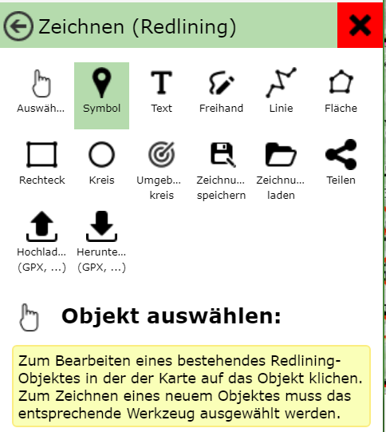
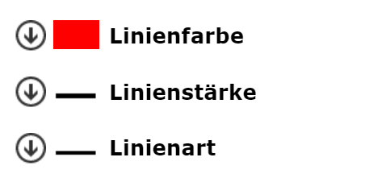
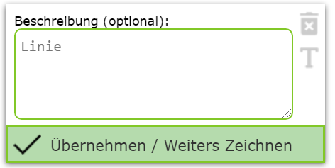
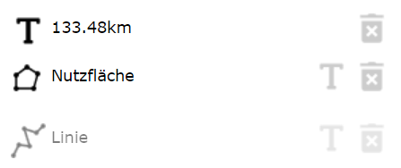

Bedienung Werkzeug Zeichnen (Redlining)¶
Allgemeine Bedienung¶
Das Zeichnen (Redlining) Werkzeug ist ein eigentlich ein Sammlung von (Sub) Werkzeugen, die es ermöglichen, den Inhalt der Karte graphisch zu ergänzen. Nach dem Öffnen des Werkzeuges wird der Zeichnen (Redining) Dialog angezeigt. Darin werden alle Möglichen Zeichenwerkzeuge angeboten. Zusätzlicht gibt es noch Buttons zum Verwalten von Zeichnungen (Laden, Speichern, Teilen, Upload, Download)
Die Buttons können jetzt nach Endgerät variieren. In den Abbildung sind alle Werkzeuge zu sehen (Desktop). Unter den Buttons wird noch einmal der Name des gerade aktiven Zeichenwerkzeuges angezeigt, sie gelb hinterlegt eine Beschreibung, wie dieses Werkzeug bedient wird (zB In die Karte klicken, auf bestehendes Zeichnungselement klicken, usw)
Aufgrund dieser Beschreibung wird hier nicht auf die genaue Klickabfolge für die einzelnen Zeichenwerkzeuge wiedergeben, sondern es werden die Möglichkeiten und Unterschiede der Werkzeuge aufgezeigt.
Neues Element zeichnen¶
Je nach Zeichenwerkzeug werden unter den Buttons noch Optionsmenüs für die Darstellung des zu Zeichnenden Elementes angezeigt. Wählt man beispielsweise das Linie Werkzeug aus, gibt es folgende Darstellungsoptionen:
Möchte man die Farbe für die Linie änderen, klickt man auf das Optionsmenü, das dadurch abgeklappt wird, und weiter Farben anbietet. Gleiches gilt für Linienstärke und Linienart (durchgezogen, strichliert, …)
Diese Optionen beziehen sich immer auf das gerade aktive Element. Ändert man eine Darstellungsoption, ändert sich die Darstellung sofort in der Karte.
Bemerkung
Zeichnet man ein neuen Objekt, erkennt man die Änderungen erst, wenn man die Karte klickt um Stützpunkte für das Element erstellt.
Legt man ein neuen Element an (beispielsweise eine Line) müssen durch Klicken in die Karte mindestens zwei Stützpunkte definiert werden. Wir die Linie als gültig erkannt (mindesten zwei Stützpunkte) kann es in die Karte übernommen werden. Bis zum Übernehmen werden immer noch die Entwurfsskizze (Sketch) mit den Stützpunkte angezeigt. Solange die Entwurfsskizze angezeigt wird, kann die Linie auch noch verändert werden:
Weiter Stützpunkte zeichnen
Stützpunkte mit der Maus verschieben
Arbeitsschritte über das Entwurfs-Kontextmenü (rechte Maustaste) rückgängig machen
über die Darstellungsoptionen die Darstellung änderen
Das ein gezeichnet Element gültig ist und in die Karte übernommen werden kann, ist über den Werkzeugdialog ersichtlich. Sobald bei einer Linie beispielsweise zwei Stützpunkte gesetzt wurden, erscheint im Werkzeugdialog folgender Button:
In die Karte Übernommen wird das Zeichenelement mit Button Übernehmen / Weiteres Zeichnen. Die der Name schon vermuten
lässt, kann nach dem Übernehmen gleich eine weitere Linie gezeichnet werden.
Bevor man ein Zeichenelement in die Karte übernimmt, kann optional noch ein Beschreibung angegeben werden.
Wenn die Linie beispielsweise einen Weg beschreibt, könnte man hier Webbeschreibung nach ... eintragen.
Beschreibungen für Zeichenelemente sind optional, helfen allerdings das Element später wieder zuzuordnen und zu interpretieren.
Tip: Es gibt noch weitere Möglichkeiten, um ein Zeichenelement in die Karte zu übernehmen und ein weiters zu zeichnen:
Abschließen eines Entwurfes mit einem Doppelklick. Danach kann gleich mit dem Zeichnen eines Element gleichen Types forgesetzt werden.
Ändern des Zeichenwerkzeuges: Zeichnet man eine eine Linie möchte danach beispielsweise mit dem Zeichnen einer Fläche fortfahren, reicht es auf das Fläche Werkzeug zu klicken, eine gültige Linie wird dann automatich übernommen.
Beschriften eines Zeichenelements: Um oben gezeigten Übernehmen Dialog wird rechts neben dem Eingebefeld ein T (für Text) angezeigt. Damit wechselt man zum Text Werkzeug und kann das aktuelle Element beschriften (zB Länge eine Linie - siehe unten)
Bereits übernommene Zeichenelement werden zusätzlicht zur Karte auch als Liste ganz unten im Werkzeugdialog angezeigt:
Das Icon zeigt an, um welchen Typ es sich bei dem Element handelt (Line, Fläche, Text, …). Zusätzlich gibt es noch einen Löschen Button (Mistkübel) und je nach Typ einen T Button (Text - Beschriften, siehe unten)
Unterschiedliches Verhalten von Elementtypen¶
Das oben beschrieben Verhalten ist nicht bei allen Elementtypen gleich. Hier ein paar Unterschiede/Besonderheiten
Symbol: Symbole benötigen nur einen Stützpunkt. Nach dem setzten des Punkte muss nicht zwingend auf den Übernehmen / Weiteres zeichnen Button geklickt werden, sondern es reicht hier noch einmal in die Karte zu klicken um ein weiteres Symbol zu zeichnen. Dadurch ist ein schnelles Zeichnen von mehreren Symbolen durch einfaches Klicken in die Karte (pro Klick wird ein Symbol in die Karte gesetzt)
Freihand: Mit diesem Werkzeug kann mit gedrückter Maustaste eine „freihand“ Linie gezeichnet werden. Wird die Maustaste losgelassen, wird diese sofort in die Karte übernommen. Dadurch können sehr schnell und komfortabel mehrere Freihandlinien gezeichnet werden.
Text: Um einen Text in der Karte zu setzten, ist nach dem Auswählen des Text Werkzeugs in die Karte zu klicken, um die Position des Textes festzulegen. Dadurch die Position wird der Text gültig und es kann der eigentliche Text über das Textfeld über den Übernehmen / Weiteres zeichnen geändert werden. Ein Änderung sollte gleich in der Karte ersichtlich werden. Sollte die Position noch einmal geändert werden, kann diese mit einem eim weiteren Klick in die Karte (oder ziehen des Einfügepunktes) erfolgen. Mit Übernehmen / Weiteres zeichnen wird der Text endgültig in die Karte übernommen.
Bestehendes Element verändern¶
Es gibt zwei Möglichkeiten, um ein bereits gezeichnetes Element zu verändern.
Über das Zeichenwerkzeug Auswählen (Finger): Damit wir über einen Klick auf das Objekt in der Karte, das Element markiert und kann verändert werden
Über die Liste der bereits bestehenden Element: Durch Klick auf ein Element in der Liste, wird dieses für die Bearbeitung markiert.
Die zweite Methode ist praktisch, wenn mehrere Elemente übereinader liegen und ein geographisches Auswählen schwierig/ummöglich ist. Tip: Die Elemente in der Liste können leichter zugeordnet werden, wenn sie vor dem Übernehmen Beschrieben wurden, da die Beschreibung in der Liste angezeigt wird.
Wurde ein Element zum Ändern markiert, wird für das Element in der Karte der Entwurfs*sketch* angezeigt. Außerdem ändern sich die Darstellungsoptionen entsprechend.
Durch den Entwurfs*sketch* lässt sich die Geometrie des Elements verändern. Ebenfalls kann die Darstellung über die Darstellungsoptionen angepasst werden. Zum Abschließen der Änderungen, kann wieder auf den Übernehmen / Weiters zeichnen Button geklickt und vorher noch optional eine Beschreibung eingeben werden.
Bestehendes Element löschen¶
Zum Löschen eines Elements gibt es zwei Möglichkeiten:
Element über das Auswählen (Finger) Werkzeug markieren und auf den Löschen Button (Mistkübel) rechts neben dem Beschreibungs Eingabefeld klicken
In der Liste mit den bestehenden Elementen auf das Löschen Symbol (Mistkübel) klicken.
Der Vorteil bei der ersten Methode ist, dass zuerst erkennbar ist, welches Element wirklich gelöscht wird. Sind die Element nicht beschrieben worden, kann es beim Löschen aus der Liste zum Löschen des falschen Elementes kommen, weil der angezeigte Text nicht eindeutig ist.
Bemerkung
Ein Löschen ist endgültig. Beim Zeichnen (Redlining) Werkzeug wird kein Undo angeboten!
Elemente Beschriften¶
Einige Elementtypen bieten eine Beschriftung nach bestimmten Eigenschaften an:
Linien: Beschriften der Länge [m / km] der Linie
Flächen: Beschriften des Flächeninhaltes [m² / km²]
Dabei erfolgt die Beschriftung halbautomatisch. Automatisch ermittelt wird nur der Textwert, die Positionierung des Textes in der Karte verfolgt vom Anwender.
Die Vorgehensweise beim Beschriften ist folgende:
Im Werkzeugdialog auf das T Symbol (Text) für das entsprechende Objekt klicken.
Beim aktuellen Element befindet sich der Button rechts neben dem Textfeld für die optionale Beschreibung es Elements. Bereits in die Karte übernommene Element weisen diese Symbol in der Liste der erstellten Elemente auf.
In die Karte klicken, um den Punkte zu positionieren.
Eventuell Darstellung (Schriftgröße) ändern oder den Text erweitern/verändern
Auf Übernehmen / Weiteres zeichnen klicken, über den Text in die Karte zu übernehmen